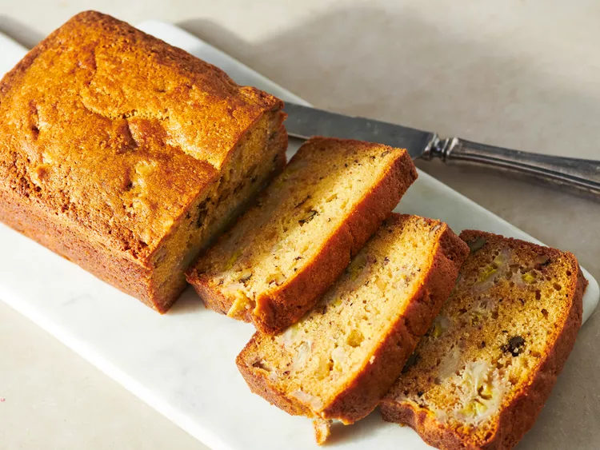

Banana Bread

Description
Banana bread is a delicious, moist loaf made with ripe bananas that give it a natural sweetness and rich flavor. The bananas are mashed and combined with ingredients like flour, sugar, butter, and eggs, creating a batter that's easy to mix and bake. Baking soda or powder is used as a leavening agent, ensuring the bread rises and achieves a tender, slightly dense texture. It is often enhanced with spices like cinnamon or vanilla, which add extra warmth to the overall flavor.
This versatile bread can be customized by adding nuts, such as walnuts or pecans, or even chocolate chips for a bit of indulgence. Banana bread is perfect for any time of day—whether as a breakfast treat, an afternoon snack, or a dessert. It is often enjoyed warm, with a spread of butter or peanut butter, making it a comforting, satisfying choice that is loved by many.
Ingredients
- Sugar: 1 Cup white sugar
- Butter: Half a cup butter,melted
- Eggs: 2 Eggs
- Vanilla Extract: 1 teaspoon vanilla extract
- Flour: 1 and a half cups all-purpose flour
- Baking Soda: 1 teaspoon baking soda
- Salt: Half a teaspoon salt
- Sour Cream: Half a cup sour cream
- Walnuts: Half a cup of chopped walnuts
- Bananas: 2 medium Bananas,sliced
Directions
- Gather all ingredients. Preheat the oven to 350 degrees F (175 degrees C). Grease a 9x5-inch loaf pan.
- Stir sugar and melted butter together in a large bowl. Add eggs and vanilla; mix well. Combine flour, baking soda, and salt; stir into butter mixture until smooth.
- Fold in banana slices, sour cream, and walnuts; transfer into the prepared pan.
- Bake in the preheated oven until a toothpick inserted into the center of the loaf comes out clean, about 1 hour.
- Cool loaf in the pan for 10 minutes before inverting onto a wire rack to cool completely.
- Serve and enjoy!